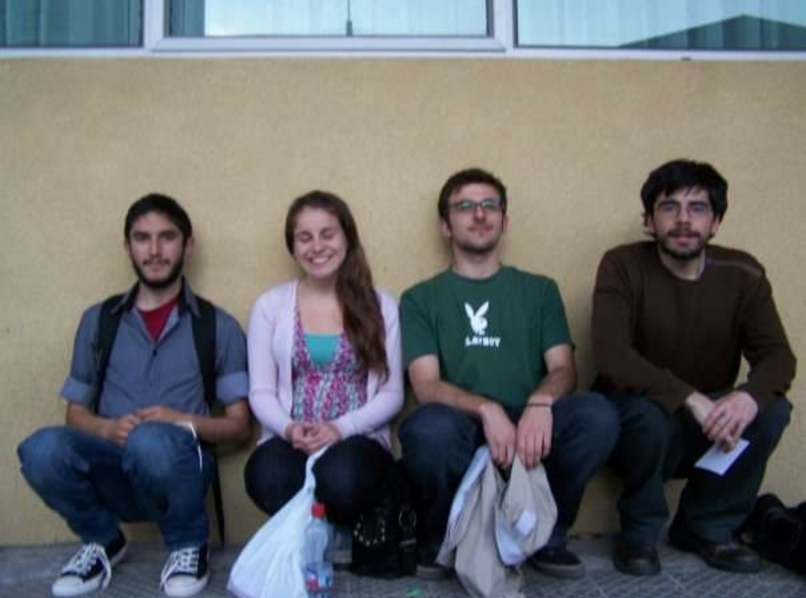
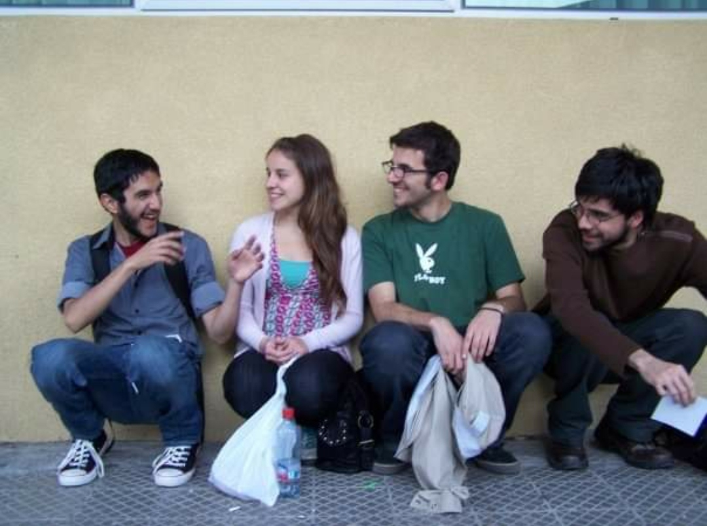
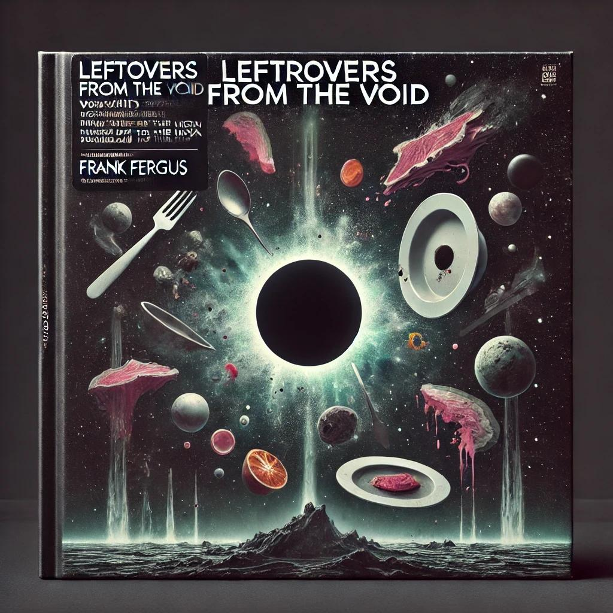

De la Cendre à la Renaissance : Frank Fergus Transforme le Drame en Musique Après 15 Ans de Silence
Quinze longues années se sont écoulées depuis que Frank Fergus, le groupe qui a révolutionné la scène indie avec son album emblématique You Cannot Have That Much Butter, s'est dissous au milieu de rumeurs et de controverses. Ce qui semblait être la fin définitive fut, en réalité, le début d'une longue période de réflexion et de distance. Aujourd'hui, tel un phénix renaissant, ils reviennent avec une nouvelle œuvre qui, étonnamment, s'inspire de cet événement culinaire fatidique. Dans cet entretien exclusif, Cano, Beñi, Jimmy et Leonardo nous racontent comment ils ont réussi à transformer un malentendu dramatique en art.
Question 1 : Nous nous souvenons tous de l'intoxication alimentaire controversée qui a mis fin au groupe il y a 15 ans. Que s'est-il réellement passé cette nuit-là chez Cano ?
Cano : "C'était de la folie. Nous avions décidé de célébrer le succès de You Cannot Have That Much Butter avec une fête chez moi, chacun d'entre nous cuisinant un plat spécial. Ce que nous ne savions pas, c'est que nous avions créé une bombe toxique culinaire. J'ai préparé un ceviche de fugu ; Beñi a apporté du jerky de poulet qu'elle avait laissé sécher dans son garage ; Jimmy a décidé de faire un carpaccio de vache folle ; et Leonardo, comme toujours, a été plus expérimental avec un soufflé aux champignons magiques. Nous avons tous fini à l'hôpital, et personne ne voulait assumer la responsabilité."
Beñi : "Je continue de dire que mon jerky n'était pas le coupable !"
Jimmy : "Oui, bien sûr, mais ça sentait le danger dès que tu l'as sorti du tupperware."
Leonardo : "Mon soufflé était le moins dangereux, il était juste hallucinogène !"
Question 2 : Comment cet incident a-t-il affecté la dynamique du groupe ?
Cano : "C'était dévastateur. Nous étions tous en colère et méfiants. Nous pensions que c'était la faute de l'autre, et cela a généré une tension énorme. Cet épisode a été le catalyseur de notre séparation. Nous avions besoin de temps pour guérir, non seulement physiquement, mais aussi émotionnellement."
Jimmy : "Quelque chose s'est brisé entre nous cette nuit-là. Ce n'était pas seulement l'intoxication, c'était ce qui est venu après : le silence, les accusations voilées… C'était difficile."
Question 3 : Maintenant, des années plus tard, vous revenez avec un album inspiré par cet événement. Qu'est-ce qui vous a poussés à transformer ce traumatisme en musique ?
Cano : "Avec le temps, nous avons commencé à voir l'humour dans ce qui s'était passé. Nous nous sommes rendu compte que nous avions laissé une situation ridicule nous détruire. L'album est une sorte de catharsis pour nous tous, un exorcisme de ces démons qui nous ont éloignés pendant si longtemps."
Beñi : "Chaque chanson est comme une excuse sous forme d'art. C'est notre façon de rire de tout ce qui nous a séparés."
Leonardo : "C'est un album très personnel, et en même temps, universel. Il parle de la fragilité des relations humaines et de la façon dont parfois les choses les plus absurdes peuvent avoir le plus grand impact."
Question 4 : Comment décririez-vous ce nouvel album par rapport à d'autres artistes ?
Leonardo : "Pour moi, c'est comme si ABBA avait fait un album conceptuel après un dîner empoisonné. Pensez à un mélange entre 'Mamma Meatball' et 'Dancing Bean.' C'est de la pop, mais avec une touche… intoxicante."
Beñi : "Je ne sais pas à quoi tu penses, Leonardo. Cet album est du rock pur. C'est comme si AC/DC avait décidé de faire un album entier sur la nourriture dangereuse, quelque chose comme 'Highway to Heartburn' ou 'Back in the Snack.'"
Cano : "Je le vois plus comme si Madonna avait fait un retour épique après une expérience de mort imminente. Quelque chose entre 'Like a Surgeon' et 'Material Liver.'"
Jimmy : "Les gars, je ne sais pas dans quel monde vous vivez, mais cet album a l'ambiance de Chico Trujillo en mauvais trip de ceviche. C'est comme 'Gran Concha' mais dans une version sombre et psychédélique."
Question 5 : You Cannot Have That Much Butter a été un succès massif. Avez-vous ressenti la pression de créer ce nouvel album après tant de temps ?
Cano : "Nous avons définitivement ressenti la pression, mais nous savions aussi que nous ne voulions pas nous répéter. Nous voulions explorer de nouveaux territoires, tant sur le plan des paroles que de la musique. Cet album est différent, plus sombre dans certains aspects, mais aussi plus libérateur."
Question 6 : Que diriez-vous à vos fans qui ont attendu si longtemps pour ce retour ?
Jimmy : "Merci de ne pas nous avoir oubliés. Cet album est notre façon de dire que nous sommes toujours là, plus sages, plus unis, et avec beaucoup plus d'histoires à raconter."
Leonardo : "Nous espérons que vous apprécierez cet album autant que nous avons pris plaisir à le créer… cette fois, sans intoxications."
Liste des titres du nouvel album :
Le nouvel album s'appelle "Leftovers from the Void." Voici les titres des huit chansons qui composent ce voyage musical :
- Fugu Blues
- Charqui of Doom
- Mad Cow Tango
- Psychedelic Soufflé
- Eternal Heartburn
- Tupperware Tragedy
- Highway to Hypertension
- Dancing with Salmonella
Conclusion :
Frank Fergus est de retour, transformant le drame et la discorde en un album qui promet d'être aussi mémorable que leur histoire. L'incident qui a failli détruire le groupe est maintenant l'étincelle qui les a ramenés à la vie. Leurs fans ne pourraient pas être plus enthousiastes, et le monde de la musique est prêt à les accueillir à bras ouverts.
Frank Fergus - Mini Bio
Origine : Concepción, Chili
Formation : 2003
Genres Musicaux : Folk, Rock, Psychédélisme, New Age, Zampoña
Membres :
- Cano : Chant, amateur de ceviches dangereux
- Beñi : Batterie, experte en jerky de garage
- Jimmy : Guitare, basse, banjo ; suspect habituel dans la cuisine
- Leonardo : Clavier, thérémine ; créateur du soufflé hallucinogène mythique
Fait Amusant : Le groupe insiste pour que leurs sessions d'enregistrement incluent un rituel secret avec des zampoñas pour "invoquer les esprits créatifs".
Fait Amusant : Frank Fergus a essayé de jouer à un mariage, mais a été expulsé après que la mariée ait cru que leur thérémine "appelait des extraterrestres".